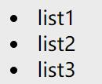
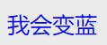
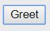
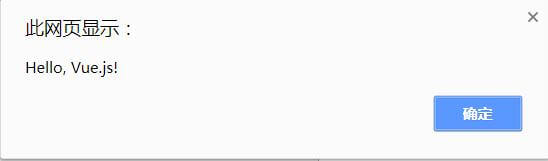

前端笔记——Vue.js基础
Vue.js 是什么
官网给出的介绍是：Vue.js是一套构建用户界面的渐进式框架。与其他重量级框架不同的是，Vue 采用自底向上增量开发的设计。Vue 的核心库只关注视图层，它不仅易于上手，还便于与第三方库或既有项目整合。另一方面，当与单文件组件和 Vue 生态系统支持的库结合使用时，Vue 也完全能够为复杂的单页应用程序提供驱动。
嗯，大概就是这样~
老规矩，先来个正确的打开姿势
<div id="app">
{{ message }}
</div>
<script src="vue.js"></script>
<script>
// 创建一个 Vue 实例
new Vue({
el: '#app',
data: {
message: 'Hello World!'
}
})
</script>
得到
仔细看了上例其实也很容易明白，下面具体讲一下一些基本语法
数据绑定
- 使用"{{...}}"进行数据绑定，被绑定的属性发生变化时视图层也会实时更新（使用v-once指令只插入一次，之后不会再更新）
-
双向绑定：使用v-model指令
<div id="app"> <p>{{ message }}</p> <input type="text" v-model="message"> </div>将message绑定到文本框，当更改文本框的值时，{{ message }} 中的内容也会被更新。{{ message }}
一些常用指令
-
v-if
<div v-if="expression"> 当expression表达式为true时则显示这段话 </div> -
v-show
<div v-show="expression"> 当expression表达式为true时则显示这段话 </div> 与v-if不同，v-show只是将元素隐藏（display=none），而v-if是根据表达式的值 来执行元素的插入或者删除行为。 -
v-else-if 和 v-else
很容易理解，不多说
-
v-for
<ol id="app"> <li v-for="item in items"> {{item}} </li> </ol> new Vue({ el: '#app', data: { items: [ 'list1', 'list2', 'list3' ] } }) -
v-bind
"{{...}}"不能绑定在元素的属性上，所以要用v-bind
<div v-bind:style="myColor">我会变蓝</div> data: { myColor: { color: 'blue' } } 缩写 <div :style="myColor">我会变蓝</div> -
v-on
<button v-on:click="greet">Greet</button> data: { message: 'Hello, Vue.js!' }, methods: { greet: function() { alert(this.message) } 缩写 <button @click="greet">Greet</button> 
修饰符
用在指令后，如 .trim（去除首尾空格）
<input v-model.trim="msg">
事件修饰符
//阻止单击事件继续传播
<a v-on:click.stop="doThis"></a>
//提交事件不再重载页面
<form v-on:submit.prevent="onSubmit"></form>
//修饰符可以串联
<a v-on:click.stop.prevent="doThat"></a>
//只有修饰符
<form v-on:submit.prevent></form>
//添加事件监听器时使用事件捕获模式
//即内部元素触发的事件先在此处处理，然后才交由内部元素自身进行处理
<div v-on:click.capture="doThis">...</div>
//只当在 event.target 是当前元素自身时触发处理函数
//即事件不是从内部元素触发的
<div v-on:click.self="doThat">...</div>
//点击事件将只会触发一次
<a v-on:click.once="doThis"></a>
按键修饰符
.enter
.tab
.delete (捕获“删除”和“退格”键)
.esc
.space
.up
.down
.left
.right
可以通过全局 config.keyCodes 对象自定义按键修饰符别名：
// 可以使用 `v-on:keyup.f1`
Vue.config.keyCodes.f1 = 112
还有一些其他的，不洗细举了
对象语法和数组语法
<div v-bind:class="{ active: isActive }"></div>
data: {
isActive: true
}
如果iActive为true，则class获得active值
<div v-bind:class="[activeClass, errorClass]"></div>
data: {
activeClass: 'active',
errorClass: 'text-danger'
}
class="active text-danger"
最后说一下vue实例里的结构
new Vue({
el: '#id',
data: {
message: 'Hello'，
firstName: 'Foo',
lastName: 'Bar',
fullName: 'Foo Bar'
},
computed: {
// 计算属性的 getter
reversedMessage: function () {
// `this` 指向 vm 实例
return this.message.split('').reverse().join('')
}
},
methods: {
reversedMessage: function () {
return this.message.split('').reverse().join('')
}
},
watch: {
firstName: function (val) {
this.fullName = val + ' ' + this.lastName
},
components: {
'my-component': {
template: '<div>A custom component!</div>'
}
}
})
- el: "#id", //id对应某个使用该实例的元素id
- data: {...}, //存放该实例里的共用属性，可以是属性值或函数
- computed: {...}, //计算属性缓存
- methods: {...}, //方法
- watch: {...}, //侦听属性，用来观察和响应 Vue 实例上的数据变动
- components: {...}, //组件（局部注册），我们将会在下一节来讲解